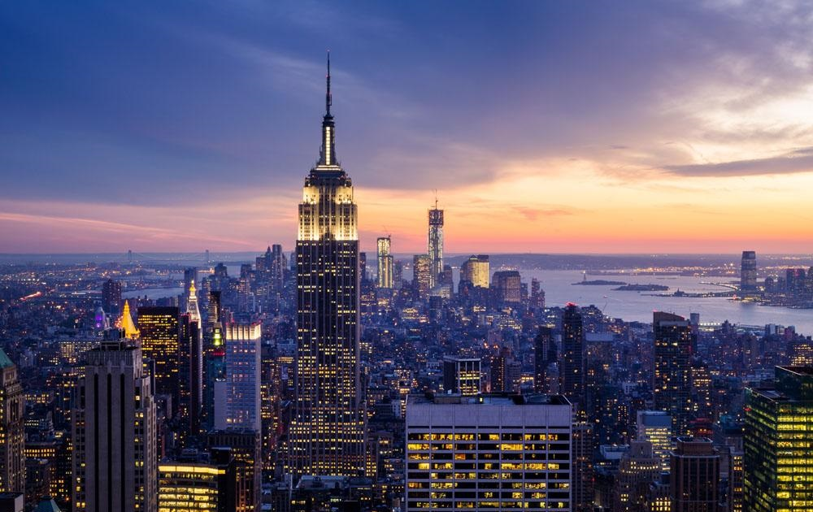
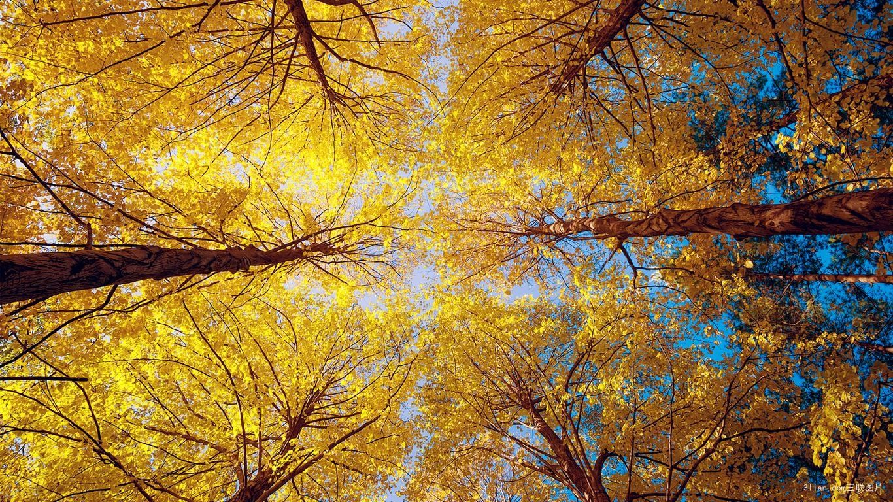

世界这么大，我想去看看
旅行不是一次出行，也不只是一个假期。旅行是一个过程，一次发现。是一个自我发现的过程。真正的旅行让我们直面自我。
旅行不仅让我们看到世界，更让我们看到自己在其中的位置。
一场说走就走的旅行
生活不只眼前的苟且，还有诗和远方
城市之光


旅行不是一次出行，也不只是一个假期。旅行是一个过程，一次发现。是一个自我发现的过程。真正的旅行让我们直面自我。
人生最好的旅行，就是你在一个陌生的地方，发现一种久违的感觉，觉得人应该去旅行，在年轻的时候，趁着有脾气装潇洒，有本钱耍个性，离开睁眼闭眼的城市，逃离身边的纷纷扰扰，找一个让心里安静和干净的地方，让自己随心而行。
这是一个浪漫的岛屿，每一眼都让人沉醉，这个有着蜜月天堂美誉，到处是碧海蓝天，一生不可错过的海岛
帝国大厦是一栋超高层的现代化办公大楼，它和自由女神像一起被称为纽约的标志。地上建筑有381米高的帝国大厦,此大厦在美国经济最萧条，最不景气的时候，以仅仅不到2年的时间建成。 在86楼及102楼有瞭望台，由于是露天的望台，台上的风力相当大。晴天的时候可远望至100公里远的地方。帝国大厦耸立于曼哈顿(Manhattan)市区，高达443米，在上面可以日夜像“金刚”(King Kong)一样环视四周的地平线的美景。天气晴朗时，游客可以从102层观景台和86层观景台外步行道眺望五个州.
“不到长城非好汉”，说的是来中国旅游，必定要看长城。而到美国，不爬一下帝国大厦，恐怕也是虚枉美国之行了。只有登上帝国大厦，才能真正体会到纽约这座城市的魅力和巨大震憾力
秋风乍起，落叶归根;静水东流，孤夜月明。秋天给人一种悲凉寂寥的感觉。有的人在这样的季节里会伤春悲秋，会在这样的季度里感叹生命的无常。
然而，当你步足东京大学校园内，金黄色的落叶堆积起来宛如一条黄金大道，在阳光的照耀下，景色十分醉人。
抬头仰望，金黄的叶子，在阳光的照射下。多么炫目多彩。